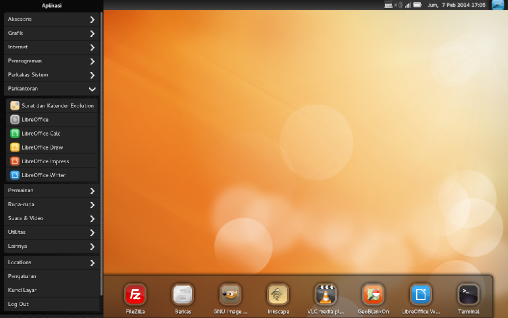

Blankon 9 Suroboyo
Proyek BlankOn dengan bangga mempersembahkan rilis ke-9 dengan nama kode Suroboyo. Rilis kali ini dengan dukungan perangkat keras lebih banyak dan terbaru sehingga pengguna tidak perlu repot memasang penggerak (driver) untuk perangkat kerasnya. Rilis ini juga terdapat penambahan fitur serta aplikasi baru di dalamnya dengan harapan para pengguna bisa lebih mudah dalam menggunakannya.
Manokwari
Manokwari adalah destop yang dikembangkan oleh pengembang BlankOn dengan teknologi HTML5 danCSS3. Hal ini membuat destop manokwari menjadi destop cantik, modern, ringan dan mudah untuk dimodifikasi.
